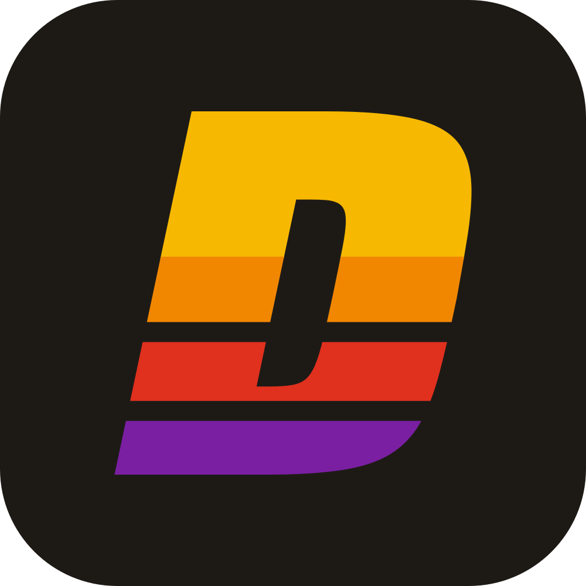
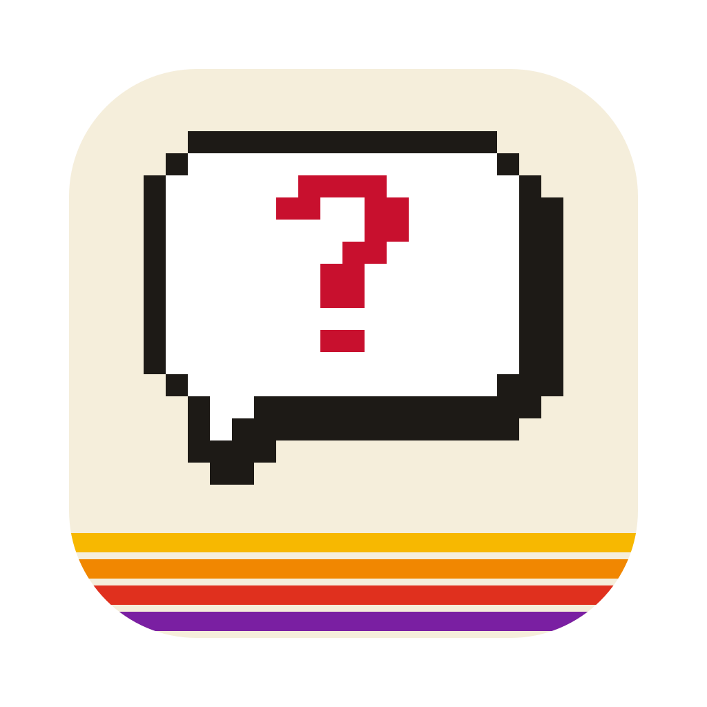
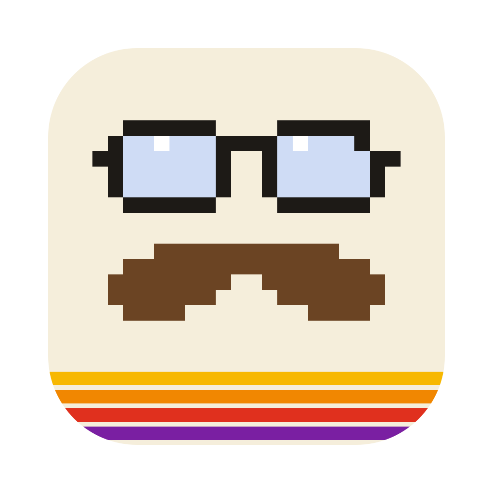
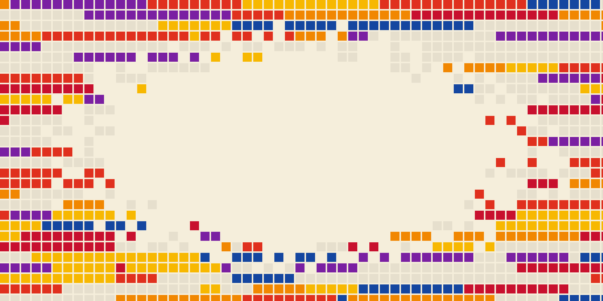

Logo
The DadWare wordmark
DADWARE in Saira Black Italic, cut into four stripes: yellow, orange, red, purple. The gaps between stripes are see-through, so the logo works on any background. The letters are outlines, so the files look right on any computer, with or without the font.




The mark




Using it
- Leave clear space around it at least as tall as the yellow top stripe.
- Keep the wordmark at least 16 pixels tall on screen. Smaller than that, use the D mark or the tile.
- Put it on calm backgrounds: cream, white, near-black or red.
- Use the one-color or white version when color isn't possible.
- Don't stretch, squash, rotate or re-slant it.
- Don't change the stripe colors or their order.
- Don't add shadows, glows, outlines or 3D effects.
- Don't put it on a busy background, like the disk-map hero.
- Don't retype it in a font. Use the files.
App icon · Not decided yet
Ask Dad icon concepts
The app needs its own icon for the Dock and the DMG (BACKLOG.md, step 4b). These are three directions to choose from. Each is original: none uses Apple's Finder face from the early mockup.


Colors
Box Art palette
Cream like an old game box, near-black text, a red you can't miss for the one thing to click, and four stripe colors from yellow to purple. The numbers under each swatch are contrast against the page background (higher is easier to read). Text needs at least 4.5, big text and icons at least 3.
Rules
- Red is for the main action: the download button, step numbers. One red button per screen.
- Blue is for links and small labels.
- Grades use green (A, B), amber (C) and red (D, F). Always show the letter too; never rely on color alone.
- Don't put stripe colors behind text; they're for the logo, dividers and art.
- Don't add new colors without checking contrast in the brand lab.
- Don't use a blue-to-purple gradient. It's the default look of every AI-generated site.
Fonts
Three fonts, one job each
All three are free Google Fonts under the SIL Open Font License, which allows using them on the website and in the logo. The new website serves its own copies from site-next/fonts, so it makes no requests to Google.
abcdefghijklmnopqrstuvwxyz 0123456789 ?!&
Use it big and short: headlines and labels of a few words. Never for paragraphs.
abcdefghijklmnopqrstuvwxyz 0123456789
Bold for the key phrase. Italic, rarely. Il1 O0 — letters that are easy to tell apart.
Made by the Braille Institute so letters that look alike (I, l, 1; O, 0) don't. That's why it's the body font: kids and non-technical adults read this site.
abcdefghijklmnopqrstuvwxyz 0123456789 ~/Downloads
For anything you'd type in Terminal, and for the little spaced-out labels like FREE · OPEN SOURCE · BETA.
Sizes on the website
| Headline · 64px | Just ask Dad. |
| Section · 30px | What it does |
| Lead · 19px | Scans your Mac. Grades your storage. Tells you what to clean up. |
| Body · 17px | I built this to help my daughter understand what's taking up space on her Mac. |
| Small · 15px | macOS will probably ask if Ask Dad can look at your Desktop. |
| Label · 14px mono | Free · Open source · Beta |
| Code · 15px mono | askdad cpu |
Website parts
Building blocks
The pieces the new website (site-next/index.html) is made of, with the same styles. Corners are 4 pixels everywhere.
Red with a hard black shadow for the one main action. Outline for everything else.
The letter is always there, so the grade reads without color.
- Nothing to buy. No trial, no subscription, no upgrade.
- Private, secure. It doesn't connect to the internet or use AI to scan your computer.
- Your grade and helpful metrics
- Every big folder, ranked
- Open AskDad-1.0-beta.dmg from your Downloads.
- Drag Ask Dad into Applications.
$ askdad
$ askdad all
Speed stripes between big sections, edge to edge.
Images
Pixel art and the disk map
Pictures are pixel art in the brand colors, drawn as SVG so they stay sharp. Make new ones in the brand lab (brand-lab.html) so they match.

Voice
Sounds like John, not a marketing team
Ask Dad was built by a dad for his daughter. The words should sound like him: first person, short, a little loose, honest that it's a beta.
I built this to help my daughter understand what's taking up space on her Mac.
Read-only. You figure out what you want to delete.
This is a beta. If people like it, I'll make it a real Mac app.
Not one of those cleaner apps.
Ask Dad empowers you to take control of your storage.
Advice, not orders.
Unlock Pro for deeper cleaning.
Unlike CleanMyMac, we…
Rules
- Facts first, then one joke at most.
- Say what Ask Dad doesn't do. That's what builds trust.
- Plain words. Short sentences. One idea each.
- Never name another company.
- Never hint that it will cost money later.
- Never promise something the build doesn't do.
Promises the website makes
- Free and open source (MIT). Nothing to buy: no trial, no subscription, no upgrade.
- Never deletes anything. Read-only.
- Doesn't connect to the internet or use AI to scan your computer. The report offers a prompt you can paste into an AI yourself; Ask Dad never sends it.
- Pure Python code, open to read on GitHub.
If the product changes, change the website the same day.
Files
Where everything is
assets/dadware/BRAND.md: this guide in words.assets/dadware/brand-picks.json: the saved choices. Load them inbrand-lab.htmlto try changes.assets/dadware/brand-lab.html: the tool for colors, fonts, wordmark, hero backgrounds and pixel assets.assets/dadware/logo/: logo, one-color, white, D mark, tile, favicon, app icon concepts.site-next/fonts/: the three fonts (web files) and their licenses.site-next/img/: the hero, divider and icons the website uses.